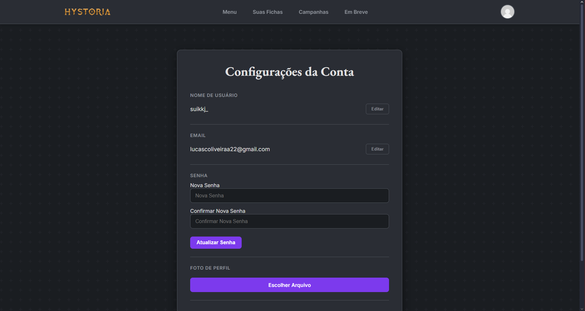
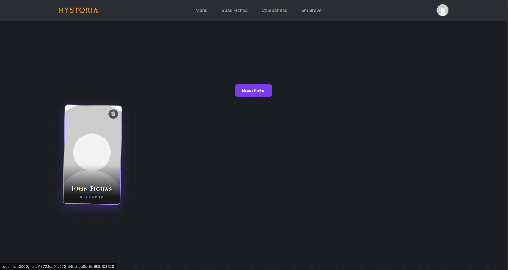
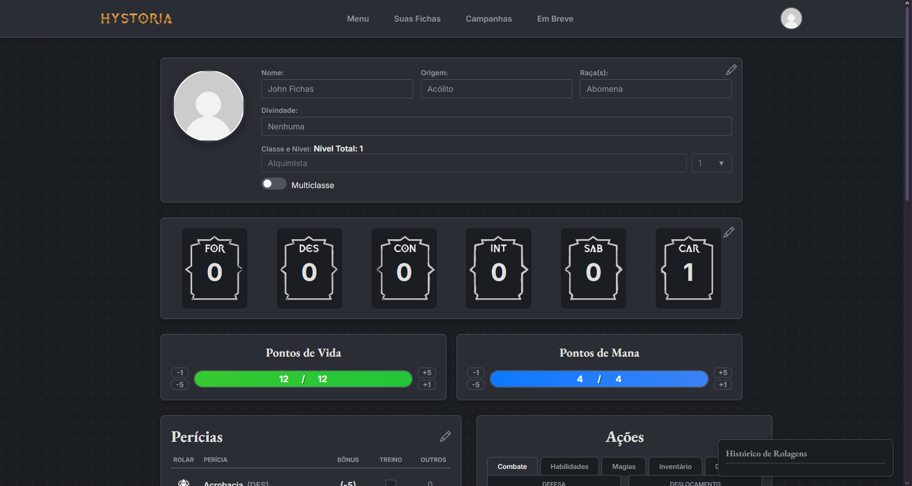
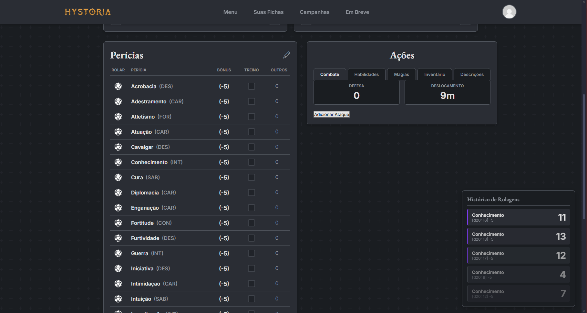
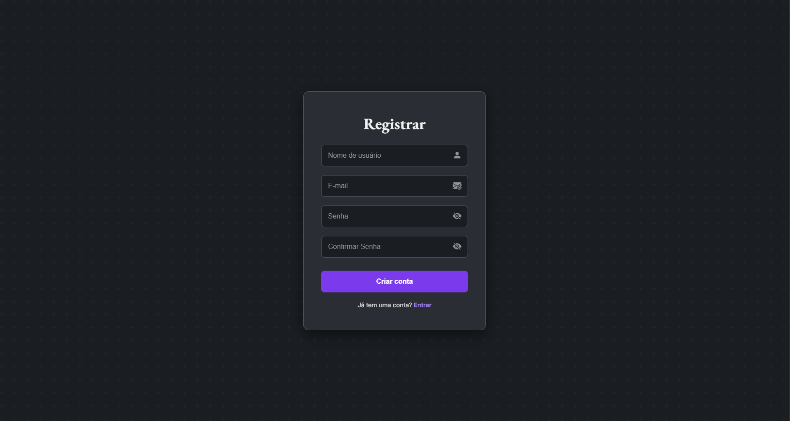
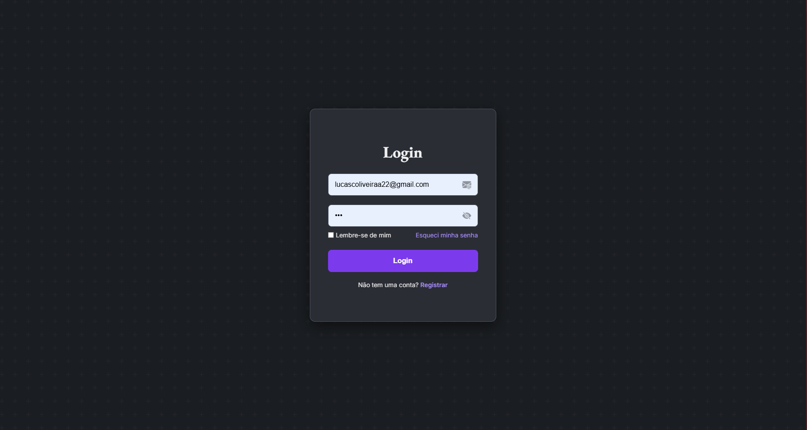

×
 ❮
❯
❮
❯
Criador de Fichas para RPG
Uma ferramenta web para automatizar a criação de personagens no sistema Tormenta20.
Sobre o Projeto
Este projeto nasceu da minha paixão por RPG de mesa e da necessidade de agilizar o processo de criação de personagens para o sistema Tormenta20. A ferramenta guia o usuário através de um passo a passo intuitivo, cuidando de todos os cálculos de atributos, perícias e habilidades automaticamente.
O objetivo principal era criar uma interface limpa e amigável que pudesse ser usada tanto por jogadores novatos quanto por veteranos. O resultado é uma aplicação web responsiva que permite criar, salvar e exportar fichas de personagem em formato PDF, economizando tempo e evitando erros manuais.
Galeria de Demonstrações






Tecnologias Utilizadas
- Frontend: HTML5, CSS3, JavaScript
- Backend: Node.js com Express
- Banco de Dados: Supabase
- Outros: Git, GitHub